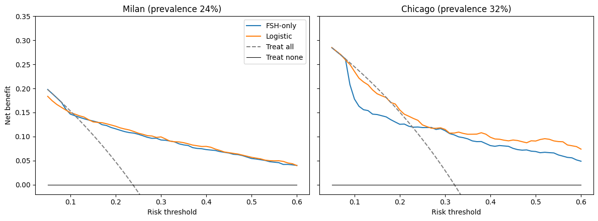

Reproducing Tradewell et al. 2022
Independent reproduction of Algorithms for Predicting the Probability of
Azoospermia from Follicle Stimulating Hormone (World J Mens Health
2022;40:600-607) from the authors’ CC0 data deposit
(doi:10.7910/DVN/EQFMCM), using seminal for the published equations.
Sections:
Cohort reconstruction: stated vs reproduced exclusion criteria
Table 1
Refit of the logistic model on the Miami development cohort
External validation in depth: calibration and decision curves
Recalibration per site
Sensitivity analyses
1. Cohort reconstruction
The Methods list four exclusions: prior vasectomy, Y chromosome microdeletion, solitary testis, and testosterone or anabolic steroid use in the prior 120 days. Applied as written to the deposit, they give Miami 943 and Chicago 614, against the paper’s 946 and 596. Milan (1,955) matches either way.
The rule that reproduces the paper’s sample sizes exactly differs in three ways, all reverse-engineered from the deposit:
Y chromosome microdeletion was not excluded (2 Miami rows, 3 Chicago rows)
Absent testis is
Why_Abscodes 1 to 3 at Miami (code 4 kept) and a recorded testis volume of 0 at Chicago, which has no absent-testis columnChicago counts sperm concentration below 0.01 million/mL as azoospermia (3 cryptozoospermic samples recorded as 0.00001 to 0.001)
preprocessing.py implements both as --exclusions stated and
--exclusions reproduced (the default).
import subprocess
import pandas as pd
# Build both versions of the processed file
for rule in ["stated", "reproduced"]:
subprocess.run(
[
"python",
"../preprocessing.py",
"--exclusions",
rule,
"--raw-dir",
"../data/raw",
"--out-dir",
f"../data/processed/{rule}",
],
check=True,
capture_output=True,
)
paper = pd.DataFrame(
{"n": [946, 1955, 596, 3497], "azoospermic": [131, 465, 191, 787]},
index=["miami", "milan", "chicago", "total"],
)
def cohort_counts(rule):
d = pd.read_parquet(f"../data/processed/{rule}/tradewell_2022.parquet")
d = d[d["included"]]
out = d.groupby("site").agg(
n=("azoospermia", "size"), azoospermic=("azoospermia", "sum")
)
out.loc["total"] = out.sum()
return out.loc[["miami", "milan", "chicago", "total"]]
pd.concat(
{
"paper": paper,
"stated criteria": cohort_counts("stated"),
"reproduced rule": cohort_counts("reproduced"),
},
axis=1,
)
| paper | stated criteria | reproduced rule | ||||
|---|---|---|---|---|---|---|
| n | azoospermic | n | azoospermic | n | azoospermic | |
| miami | 946 | 131 | 943 | 129 | 946 | 131 |
| milan | 1955 | 465 | 1955 | 465 | 1955 | 465 |
| chicago | 596 | 191 | 614 | 197 | 596 | 191 |
| total | 3497 | 787 | 3512 | 791 | 3497 | 787 |
2. Table 1
Reproduced with eda_toolkit.generate_table1, one call per site, with the
paper’s reference-range categories (built in preprocessing.py). Boundary
values belong to the normal range.
Two cells do not match the printed table and cannot be made to:
Milan FSH categories. The paper reports 1,453 normal / 54 low / 448 high. The deposit’s Milan sheet carries a precomputed FSH category whose “high” group starts at 12.5 IU/L, Milan’s own laboratory limit, not the 7.6 stated in the Methods. On a single 7.6 cutoff the counts are 1,162 / 54 / 739, and the Total column changes accordingly.
Chicago testis volume. The paper reports a median of 14.8 (10.1-17.4) mL with a normal spread across the size categories. The deposit holds raw ultrasound measurements with a median of 4.5 (4.0-4.8), evidently in cm. The authors converted to volume before analysis; the conversion is not recoverable from the deposited file.
Everything else matches to the row or within one boundary value.
from eda_toolkit import generate_table1
df = pd.read_parquet("../data/processed/reproduced/tradewell_2022.parquet")
df = df[df["included"]]
continuous = [
"age",
"sperm_concentration",
"fsh",
"lh",
"testosterone",
"testis_volume",
]
categorical = ["azoospermia", "fsh_cat", "lh_cat", "tt_cat", "vol_cat"]
# Rounding per variable, as printed in the paper's Table 1
decimals = {
"age": 0,
"sperm_concentration": 1,
"fsh": 1,
"lh": 1,
"testosterone": 0,
"testis_volume": 0,
}
# Paper-style row labels and order
labels = {
"age": "Age (y)",
"sperm_concentration": "Sperm concentration (mil/mL)",
"azoospermia = 1": " Azoospermic",
"fsh": "FSH (IU/L)",
"lh": "LH (IU/L)",
"testosterone": "TT (ng/dL)",
"testis_volume": "Mean testis size (cm3)",
}
header_rows = [
"azoospermia",
"azoospermia = 0",
"fsh_cat",
"lh_cat",
"tt_cat",
"vol_cat",
]
order = [
"Number of samples",
"Age (y)",
"Sperm concentration (mil/mL)",
" Azoospermic",
"FSH (IU/L)",
" Normal (1.5-7.6)",
" Low (<1.5)",
" High (>7.6)",
"LH (IU/L)",
" Normal (1.7-8.6)",
" Low (<1.7)",
" High (>8.6)",
"TT (ng/dL)",
" Normal (300-1,000)",
" Low (<300)",
" High (>1,000)",
"Mean testis size (cm3)",
" Normal (12.5-19)",
" Small (<12.5)",
" Large (>19)",
]
cols = []
for name, g in [
("Miami", df[df.site == "miami"]),
("Milan", df[df.site == "milan"]),
("Chicago", df[df.site == "chicago"]),
("Total", df),
]:
cont, cat = generate_table1(
g,
continuous_cols=continuous,
categorical_cols=categorical,
combine=False,
value_counts=True,
decimal_places=1,
)
cont, cat = cont._df.copy(), cat._df.copy() # unwrap TableWrapper
# median (IQR); generate_table1 reports median but not IQR
q = g[continuous].quantile([0.25, 0.5, 0.75]).T
cont["Overall"] = [
f"{q.loc[v, 0.5]:.{decimals[v]}f} "
f"({q.loc[v, 0.25]:.{decimals[v]}f}-{q.loc[v, 0.75]:.{decimals[v]}f})"
for v in cont["Variable"]
]
t = pd.concat([cont, cat])[["Variable", "Overall"]].set_index("Variable")["Overall"]
t.loc["Number of samples"] = f"{len(g):,}"
cols.append(t.rename(name))
table1 = (
pd.concat(cols, axis=1)
.drop(index=header_rows)
.rename(
index=lambda s: labels.get(s, " " + s.split(" = ", 1)[1] if " = " in s else s)
)
.loc[order]
)
table1.index.name = "Variable"
table1
| Miami | Milan | Chicago | Total | |
|---|---|---|---|---|
| Variable | ||||
| Number of samples | 946 | 1,955 | 596 | 3,497 |
| Age (y) | 35 (30-40) | 37 (33-41) | 35 (32-39) | 36 (32-40) |
| Sperm concentration (mil/mL) | 13.0 (1.3-22.0) | 6.0 (0.1-25.0) | 4.0 (0.0-25.3) | 7.6 (0.2-23.8) |
| Azoospermic | 131 (13.8%) | 465 (23.8%) | 191 (32.0%) | 787 (22.5%) |
| FSH (IU/L) | 5.1 (3.3-8.7) | 5.7 (3.4-11.3) | 6.4 (3.8-12.2) | 5.7 (3.4-10.6) |
| Normal (1.5-7.6) | 608 (64.3%) | 1,162 (59.4%) | 334 (56.0%) | 2,104 (60.2%) |
| Low (<1.5) | 51 (5.4%) | 54 (2.8%) | 16 (2.7%) | 121 (3.5%) |
| High (>7.6) | 287 (30.3%) | 739 (37.8%) | 246 (41.3%) | 1,272 (36.4%) |
| LH (IU/L) | 4.5 (3.3-6.1) | 4.3 (3.0-6.1) | 4.6 (3.4-6.8) | 4.5 (3.1-6.2) |
| Normal (1.7-8.6) | 794 (83.9%) | 1,648 (84.3%) | 486 (81.5%) | 2,928 (83.7%) |
| Low (<1.7) | 58 (6.1%) | 96 (4.9%) | 23 (3.9%) | 177 (5.1%) |
| High (>8.6) | 94 (9.9%) | 211 (10.8%) | 87 (14.6%) | 392 (11.2%) |
| TT (ng/dL) | 400 (301-530) | 456 (351-576) | 362 (263-487) | 429 (320-547) |
| Normal (300-1,000) | 695 (73.5%) | 1,642 (84.0%) | 385 (64.6%) | 2,722 (77.8%) |
| Low (<300) | 233 (24.6%) | 292 (14.9%) | 205 (34.4%) | 730 (20.9%) |
| High (>1,000) | 18 (1.9%) | 21 (1.1%) | 6 (1.0%) | 45 (1.3%) |
| Mean testis size (cm3) | 14 (12-16) | 15 (12-20) | 4 (4-5) | 14 (9-17) |
| Normal (12.5-19) | 533 (56.3%) | 885 (45.3%) | 0 (0.0%) | 1,418 (40.5%) |
| Small (<12.5) | 322 (34.0%) | 505 (25.8%) | 596 (100.0%) | 1,423 (40.7%) |
| Large (>19) | 91 (9.6%) | 565 (28.9%) | 0 (0.0%) | 656 (18.8%) |
3. Refit on the Miami development cohort
The paper prints the logistic coefficients to one or two significant figures. Refitting the same model (age, FSH, LH, total testosterone, mean testis volume) on the reconstructed 946-row Miami cohort recovers them within rounding, and gives the full-precision values and standard errors the paper omits. Every published coefficient lies within one standard error of the refit.
A properly fitted logistic intercept makes the mean predicted probability equal the observed rate; the rounded published intercept does not (15.2% predicted vs 13.8% observed on Miami). That gap is the first component of the calibration problem examined in section 4.
import numpy as np
import statsmodels.api as sm
from seminal import LR_COEFS, add_azoospermia_risk_cols
features = ["age", "fsh", "lh", "testosterone", "testis_volume"]
miami = df[df.site == "miami"]
X = sm.add_constant(miami[features])
fit = sm.Logit(miami["azoospermia"], X).fit(disp=0)
comparison = pd.DataFrame(
{
"paper (Table 3)": pd.Series(LR_COEFS).rename({"intercept": "const"}),
"refit": fit.params.round(4),
"SE": fit.bse.round(4),
"OR": np.exp(fit.params).round(3),
}
)
comparison["within 1 SE"] = (
comparison["paper (Table 3)"] - comparison["refit"]
).abs() <= comparison["SE"]
print(f"n = {int(fit.nobs)}, events = {int(miami['azoospermia'].sum())}")
comparison
n = 946, events = 131
| paper (Table 3) | refit | SE | OR | within 1 SE | |
|---|---|---|---|---|---|
| const | -1.900 | -1.7735 | 0.7294 | 0.170 | True |
| age | 0.020 | 0.0197 | 0.0137 | 1.020 | True |
| fsh | 0.130 | 0.1160 | 0.0197 | 1.123 | True |
| lh | 0.030 | 0.0423 | 0.0361 | 1.043 | True |
| testosterone | -0.002 | -0.0026 | 0.0007 | 0.997 | True |
| testis_volume | -0.080 | -0.0766 | 0.0320 | 0.926 | True |
Does the rounding matter for predictions? Discrimination is unchanged; the mean predicted probability moves by 1 to 3 points, and on Miami the refit matches the observed rate exactly, as it must.
from sklearn.metrics import roc_auc_score
rows = []
for site in ["miami", "milan", "chicago"]:
g = df[df.site == site]
p_pub = add_azoospermia_risk_cols(g)["azoo_lr"]
p_ref = fit.predict(sm.add_constant(g[features]))
rows.append(
{
"site": site,
"AUC published": roc_auc_score(g["azoospermia"], p_pub),
"AUC refit": roc_auc_score(g["azoospermia"], p_ref),
"mean pred published": p_pub.mean(),
"mean pred refit": p_ref.mean(),
"observed": g["azoospermia"].mean(),
}
)
pd.DataFrame(rows).set_index("site").round(3)
| AUC published | AUC refit | mean pred published | mean pred refit | observed | |
|---|---|---|---|---|---|
| site | |||||
| miami | 0.779 | 0.780 | 0.152 | 0.138 | 0.138 |
| milan | 0.786 | 0.784 | 0.183 | 0.164 | 0.238 |
| chicago | 0.718 | 0.724 | 0.314 | 0.288 | 0.320 |
4. External validation in depth
The paper reports discrimination (AUC) on the external sites and calibration only as within-site cross-validation, which refits the model on each site’s own data. Here the published coefficients are applied as-is, the way a clinician using the calculator would.
Calibration-in-the-large and slope. Regress the observed outcome on the model’s predicted log-odds. The intercept (CITL) is 0 when predictions are right on average and positive when the model underpredicts. The slope is 1 when predictions are as spread out as they should be and below 1 when the model is over-confident (extreme predictions should be pulled toward the middle).
from sklearn.metrics import roc_auc_score, brier_score_loss
scored = add_azoospermia_risk_cols(df)
def citl_slope(y, p):
"""Calibration-in-the-large and calibration slope on the logit scale."""
p = np.clip(p, 1e-6, 1 - 1e-6)
lp = np.log(p / (1 - p))
citl = sm.Logit(y, np.ones(len(y)), offset=lp).fit(disp=0).params.iloc[0]
slope = sm.Logit(y, sm.add_constant(lp)).fit(disp=0).params.iloc[1]
return citl, slope
rows = []
for site in ["miami", "milan", "chicago"]:
g = scored[scored.site == site]
for model, col in [("logistic", "azoo_lr"), ("FSH-only", "azoo_fsh")]:
citl, slope = citl_slope(g["azoospermia"], g[col])
rows.append(
{
"site": site,
"model": model,
"AUC": roc_auc_score(g["azoospermia"], g[col]),
"Brier": brier_score_loss(g["azoospermia"], g[col]),
"CITL": citl,
"slope": slope,
"mean predicted": g[col].mean(),
"observed": g["azoospermia"].mean(),
}
)
pd.DataFrame(rows).set_index(["site", "model"]).round(3)
| AUC | Brier | CITL | slope | mean predicted | observed | ||
|---|---|---|---|---|---|---|---|
| site | model | ||||||
| miami | logistic | 0.779 | 0.090 | -0.149 | 0.955 | 0.152 | 0.138 |
| FSH-only | 0.763 | 0.094 | -0.133 | 0.855 | 0.151 | 0.138 | |
| milan | logistic | 0.786 | 0.137 | 0.524 | 0.728 | 0.183 | 0.238 |
| FSH-only | 0.786 | 0.138 | 0.330 | 0.339 | 0.200 | 0.238 | |
| chicago | logistic | 0.718 | 0.178 | 0.043 | 0.702 | 0.314 | 0.320 |
| FSH-only | 0.707 | 0.197 | 0.853 | 0.230 | 0.207 | 0.320 |
Two things stand out. The FSH-only quadratic is badly over-confident on both external sites (slope 0.2 to 0.3): it reaches 100% by FSH 30 while observed rates at that FSH are nearer 70 to 80%. That is a structural property of fitting a parabola to binned proportions, not a transport problem. The logistic model’s slope of about 0.7 is ordinary shrinkage.
Chicago’s testis volumes. The deposit holds Chicago volumes in cm (median 4.5) where the paper’s Table 1 reports mL (median 14.8). The logistic model multiplies volume by -0.08, so the small numbers inflate every Chicago prediction. The experiment below replaces Chicago’s volumes with values on the mL scale and re-evaluates.
chicago_raw = df[df.site == "chicago"].copy()
rows = []
for label, vol in [
("as deposited (cm, median 4.5)", chicago_raw["testis_volume"]),
("all set to paper's Chicago median, 14.8 mL", 14.8),
("all set to Miami median, 14 mL", 14.0),
]:
g = chicago_raw.copy()
g["testis_volume"] = vol
p = add_azoospermia_risk_cols(g)["azoo_lr"]
citl, slope = citl_slope(g["azoospermia"], p)
rows.append(
{
"Chicago volumes": label,
"AUC": roc_auc_score(g["azoospermia"], p),
"CITL": citl,
"slope": slope,
"mean predicted": p.mean(),
"observed": g["azoospermia"].mean(),
}
)
pd.DataFrame(rows).set_index("Chicago volumes").round(3)
| AUC | CITL | slope | mean predicted | observed | |
|---|---|---|---|---|---|
| Chicago volumes | |||||
| as deposited (cm, median 4.5) | 0.718 | 0.043 | 0.702 | 0.314 | 0.32 |
| all set to paper's Chicago median, 14.8 mL | 0.715 | 0.884 | 0.711 | 0.201 | 0.32 |
| all set to Miami median, 14 mL | 0.715 | 0.820 | 0.711 | 0.208 | 0.32 |
With cm volumes the Chicago logistic model looks calibrated on average (CITL near 0). That is an accident: volumes three times too small make every man look small-testicled, which raises predictions by just enough to offset Chicago’s higher prevalence. On the mL scale the model underpredicts there by the same margin as in Milan (CITL about +0.8). Discrimination is unaffected either way, which is why the AUC comparison in the paper could not reveal it.
Decision curves (Vickers net benefit via dcurves). Net benefit at each
risk threshold, against the two default strategies of treating everyone as azoospermic or no one. A model is
useful at a threshold only where its curve sits above both.
import matplotlib.pyplot as plt
from dcurves import dca
thresholds = np.arange(0.05, 0.61, 0.01)
fig, axes = plt.subplots(1, 2, figsize=(12, 4.5), sharey=True)
for ax, site in zip(axes, ["milan", "chicago"]):
g = scored[scored.site == site][["azoospermia", "azoo_lr", "azoo_fsh"]].rename(
columns={"azoo_lr": "Logistic", "azoo_fsh": "FSH-only"}
)
dca_df = dca(
data=g,
outcome="azoospermia",
modelnames=["Logistic", "FSH-only"],
thresholds=thresholds,
)
style = {
"Logistic": dict(),
"FSH-only": dict(),
"all": dict(color="grey", linestyle="--", label="Treat all"),
"none": dict(color="black", linewidth=0.8, label="Treat none"),
}
for name, grp in dca_df.groupby("model"):
ax.plot(grp["threshold"], grp["net_benefit"], **{"label": name, **style[name]})
ax.set_title(f"{site.title()} (prevalence {g['azoospermia'].mean():.0%})")
ax.set_xlabel("Risk threshold")
ax.set_ylim(-0.02, 0.35)
axes[0].set_ylabel("Net benefit")
axes[0].legend()
plt.tight_layout()
plt.show()

5. Recalibration per site
Two standard updates, applied to each external site and evaluated on it (apparent performance; the point is to show how much of the gap each step closes, not to produce a new validated model):
Intercept-only. Shift every prediction by a constant on the log-odds scale so the mean matches the local prevalence. Needs only the site’s azoospermia rate, which any clinic knows.
Intercept and slope. Also rescale the spread of the predictions (logistic recalibration).
def recalibrate(y, p):
"""Return predictions after intercept-only and intercept+slope updates."""
p = np.clip(p, 1e-6, 1 - 1e-6)
lp = np.log(p / (1 - p))
a = sm.Logit(y, np.ones(len(y)), offset=lp).fit(disp=0).params.iloc[0]
ab = sm.Logit(y, sm.add_constant(lp)).fit(disp=0).params
p_int = 1 / (1 + np.exp(-(lp + a)))
p_full = 1 / (1 + np.exp(-(ab.iloc[0] + ab.iloc[1] * lp)))
return p_int, p_full
rows = []
for site in ["milan", "chicago"]:
g = scored[scored.site == site]
y = g["azoospermia"]
for model, col in [("logistic", "azoo_lr"), ("FSH-only", "azoo_fsh")]:
p_int, p_full = recalibrate(y, g[col])
for step, p in [
("as published", g[col]),
("intercept-only", p_int),
("intercept + slope", p_full),
]:
citl, slope = citl_slope(y, p)
rows.append(
{
"site": site,
"model": model,
"update": step,
"Brier": brier_score_loss(y, p),
"CITL": citl,
"slope": slope,
}
)
pd.DataFrame(rows).set_index(["site", "model", "update"]).round(3)
| Brier | CITL | slope | |||
|---|---|---|---|---|---|
| site | model | update | |||
| milan | logistic | as published | 0.137 | 0.524 | 0.728 |
| intercept-only | 0.133 | 0.000 | 0.728 | ||
| intercept + slope | 0.133 | 0.000 | 1.000 | ||
| FSH-only | as published | 0.138 | 0.330 | 0.339 | |
| intercept-only | 0.135 | 0.000 | 0.348 | ||
| intercept + slope | 0.148 | -0.000 | 1.000 | ||
| chicago | logistic | as published | 0.178 | 0.043 | 0.702 |
| intercept-only | 0.178 | 0.000 | 0.702 | ||
| intercept + slope | 0.177 | 0.000 | 1.000 | ||
| FSH-only | as published | 0.197 | 0.853 | 0.230 | |
| intercept-only | 0.180 | 0.000 | 0.247 | ||
| intercept + slope | 0.194 | 0.000 | 1.000 |
For the logistic model the intercept shift does most of the work (Milan Brier 0.137 to 0.133); the slope adds nothing further.
For the FSH-only quadratic the intercept+slope update worsens the Brier score. The quadratic outputs exactly 1.0 for every man with FSH above about 30 IU/L, which is an infinite log-odds; those rows dominate any logit-scale recalibration, and the result depends on an arbitrary clipping choice. A polynomial in probability cannot be recalibrated the way a logistic model can.
A logistic FSH-only alternative. Fit logit(p) = a + b * FSH on the
Miami development cohort and validate it on Milan and Chicago alongside the
published quadratic. Two parameters, the same inputs.
miami = scored[scored.site == "miami"]
fsh_logit = sm.Logit(miami["azoospermia"], sm.add_constant(miami["fsh"])).fit(disp=0)
a, b = fsh_logit.params
print(f"logit(p) = {a:.4f} + {b:.4f} * FSH (fit on Miami, n={int(fsh_logit.nobs)})")
rows = []
for site in ["milan", "chicago"]:
g = scored[scored.site == site]
y = g["azoospermia"]
for name, p in [
("quadratic (paper)", g["azoo_fsh"]),
("logistic in FSH", fsh_logit.predict(sm.add_constant(g["fsh"]))),
]:
citl, slope = citl_slope(y, p)
rows.append(
{
"site": site,
"model": name,
"AUC": roc_auc_score(y, p),
"Brier": brier_score_loss(y, p),
"CITL": citl,
"slope": slope,
}
)
pd.DataFrame(rows).set_index(["site", "model"]).round(3)
logit(p) = -3.1726 + 0.1445 * FSH (fit on Miami, n=946)
| AUC | Brier | CITL | slope | ||
|---|---|---|---|---|---|
| site | model | ||||
| milan | quadratic (paper) | 0.786 | 0.138 | 0.330 | 0.339 |
| logistic in FSH | 0.778 | 0.138 | 0.478 | 0.919 | |
| chicago | quadratic (paper) | 0.707 | 0.197 | 0.853 | 0.230 |
| logistic in FSH | 0.697 | 0.198 | 0.963 | 0.689 |
Same Brier score, AUC within 0.01, and a calibration slope near 1 instead of
0.2 to 0.3. The logistic version keeps the paper’s one-input simplicity and
can be recalibrated to a new clinic with a single intercept shift. It is a
proposal from this reproduction, not part of the published model, and is
labelled as such in seminal.
6. Sensitivity analyses
Samples vs men. The paper’s units are semen analyses, not men: a man contributes more than one row if his samples were taken over 120 days apart. The deposit carries no patient identifier, so a first-sample-per-man analysis cannot be run and the degree of clustering is unknown. This is a limitation of the deposit that the paper does not quantify.
Stated vs reproduced exclusion rule. Does the choice of cohort rule (section 1) change the validation results? Re-score the external sites under the criteria as written.
stated = pd.read_parquet("../data/processed/stated/tradewell_2022.parquet")
stated = add_azoospermia_risk_cols(stated[stated["included"]])
rows = []
for rule, data in [("reproduced", scored), ("stated", stated)]:
for site in ["milan", "chicago"]:
g = data[data.site == site]
y = g["azoospermia"]
for model, col in [("logistic", "azoo_lr"), ("FSH-only", "azoo_fsh")]:
citl, slope = citl_slope(y, g[col])
rows.append(
{
"rule": rule,
"site": site,
"model": model,
"n": len(g),
"AUC": roc_auc_score(y, g[col]),
"Brier": brier_score_loss(y, g[col]),
"CITL": citl,
"slope": slope,
}
)
pd.DataFrame(rows).set_index(["site", "model", "rule"]).sort_index().round(3)
| n | AUC | Brier | CITL | slope | |||
|---|---|---|---|---|---|---|---|
| site | model | rule | |||||
| chicago | FSH-only | reproduced | 596 | 0.707 | 0.197 | 0.853 | 0.230 |
| stated | 614 | 0.708 | 0.196 | 0.830 | 0.234 | ||
| logistic | reproduced | 596 | 0.718 | 0.178 | 0.043 | 0.702 | |
| stated | 614 | 0.723 | 0.177 | 0.009 | 0.704 | ||
| milan | FSH-only | reproduced | 1955 | 0.786 | 0.138 | 0.330 | 0.339 |
| stated | 1955 | 0.786 | 0.138 | 0.330 | 0.339 | ||
| logistic | reproduced | 1955 | 0.786 | 0.137 | 0.524 | 0.728 | |
| stated | 1955 | 0.786 | 0.137 | 0.524 | 0.728 |
Summary
The published coefficients reproduce the paper’s external AUCs (Milan 0.79 / 0.79, Chicago 0.72 / 0.71) from the public deposit.
The paper’s sample sizes reproduce exactly only with an exclusion rule that differs from the Methods: Y microdeletion was not excluded, absent testis is coded differently per site, and Chicago counts sperm concentration below 0.01 million/mL as azoospermia.
Table 1 reproduces except Milan’s FSH categories (binned on Milan’s own 12.5 IU/L limit, not the stated 7.6) and Chicago’s testis volumes (deposited in cm, analysed in mL; the conversion is not recoverable).
Refitting on Miami recovers Table 3 within one standard error of every term.
Applied as published, both models underpredict on the external sites (CITL +0.3 to +0.9). The Chicago logistic model only appears calibrated because the cm volumes inflate its predictions. The FSH quadratic is over-confident (slope 0.2 to 0.3) and cannot be recalibrated on the logit scale; a two-parameter logistic in FSH matches its discrimination and calibrates normally.
No patient identifier is deposited, so clustering of repeat samples cannot be assessed.